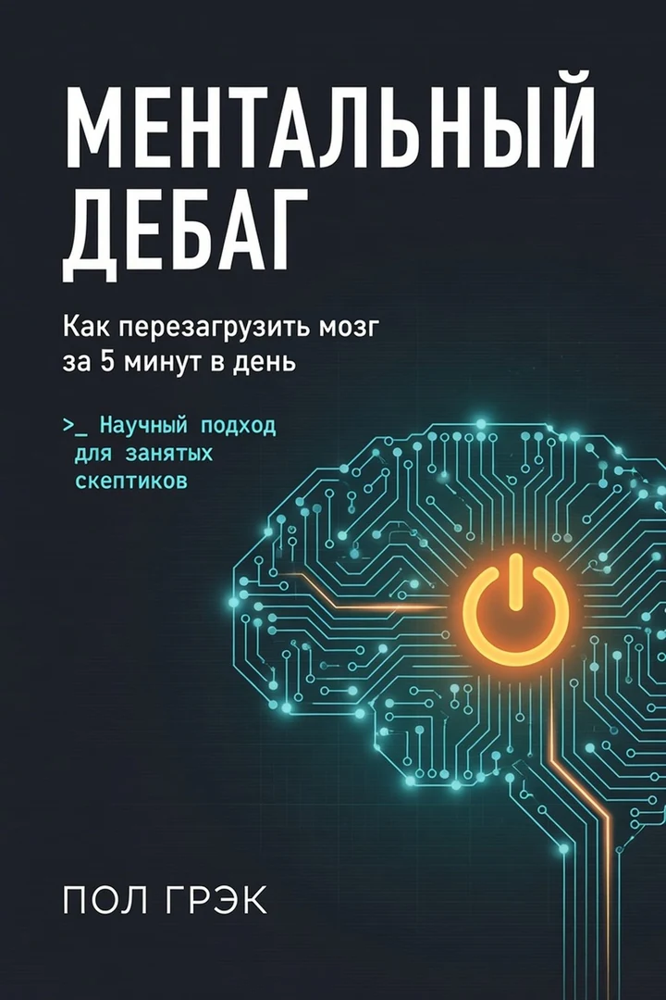
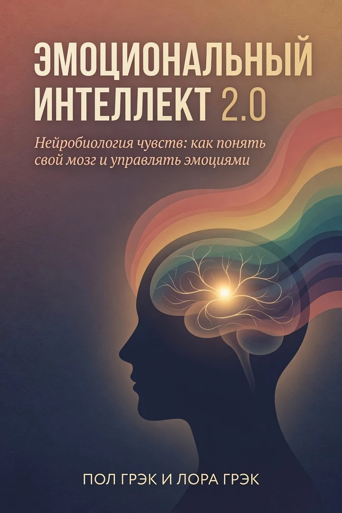

НаучпопУровни A–D
Стресс и мозг
Хроническое напряжение
Стресс как механизм: кортизол, амигдала и возврат контроля.
В книге: Стресс как адаптивный механизм
Уровни доказательности A–D


Восстановление
Как перезагрузить мозг за 5 минут в день
Сначала бесплатная глава — потом покупка на Литрес.
Реклама · erid: 2VfnxyNkZrY · партнёрская ссылка Литрес
Оплата на Литрес. Здесь — описание и фрагмент; сайт не принимает платежи.
A — надёжные данные; B — хорошие исследования; C — ограниченные данные; D — наблюдения.
Восстановление
Все книги серии →Практический протокол перезагрузки. Когда мотивационные книги раздражают, а сил на длинные практики нет — короткие, физиологически обоснованные шаги возврата ясности.
«Мотивация — не причина действия. Это его побочный продукт.»
— Пол Грэк
Фрагмент из рукописи. Если стиль зайдёт — полный текст на Литрес.
МЕНТАЛЬНЫЙ ДЕБАГ
Как перезагрузить мозг за 5 минут в день
Научный подход для занятых скептиков
Об авторе
Пол Грэк — исследователь в области прикладной нейропсихологии и корпоративной продуктивности. Образование — в сфере когнитивных наук; много лет работает на стыке нейробиологии, технологий и управления командами.
Работал консультантом по устойчивости к стрессу и концентрации внимания в международных IT-компаниях и финансовых организациях. Специализируется на внедрении научно обоснованных методов повышения когнитивной эффективности в корпоративной среде.
«Ментальный дебаг» — результат многолетней практики, исследований и адаптации нейронаучных данных под реальную рабочую среду.
Версия для корпоративного внедрения
Данный материал адаптирован для использования в корпоративной среде:
• Подходит для программ wellbeing и anti-burnout • Может использоваться как часть тренингов по управлению стрессом • Интегрируется в форматы 15-минутных обучающих модулей • Подходит для HR-департаментов и внутренних образовательных платформ
Методика не требует специальной подготовки и может быть внедрена в рабочий процесс без снижения продуктивности.
ОГЛАВЛЕНИЕ
ЧАСТЬ 1. ФУНДАМЕНТ: КАК РАБОТАЕТ ТВОЙ МОЗГ
Введение
Кто я и почему это важно
Что ты получишь через 21 день
Как читать эту книгу
ЧАСТЬ 2. ПРОТОКОЛ 21 ДНЯ
Введение в протокол
Неделя 1: Базовые инструменты
День 1-2: Утренняя калибровка
День 3-4: Микро-паузы в работе
День 5-6: Перед сном
День 7: День рефлексии
Неделя 2: Работа с тревогой
День 8-9: Медитация перед звонком
День 10-11: Дыхание между тасками
День 12-13: Когда новостная лента горит
День 14: День рефлексии
Неделя 3: Углубление практики
День 15-16: Расширенное внимание
День 17-18: Сканирование тела
День 19-20: Работа с эмоциями
День 21: Финальный день
ЧАСТЬ 3. РАСШИРЕННЫЙ ПРОТОКОЛ
Введение в расширенный протокол
Неделя 4: Фокус на одном (Саматха)
Неделя 5: Открытая осознанность (Випассана)
Неделя 6: Любящая доброта (Метта)
ПРИЛОЖЕНИЯ
Трекер 21 дня
Трекер 40 дней
ЧАСТЬ 1
ФУНДАМЕНТ: КАК РАБОТАЕТ ТВОЙ МОЗГ
ВВЕДЕНИЕ
Если ты читаешь это в метро, между двумя рабочими чатами и уведомлением от банка — эта книга для тебя.
Здесь нет места для «намазанной философии». Только инструкции, которые работают, пока ты едешь в такси.
Честное предупреждение
Я не продам тебе просветления. Не обещаю, что через 21 день ты будешь парить в…

Пол Грэк — научпоп о мозге без эзотерики. Уровни доказательности A–D, сначала проверка на себе.
Подборка
Хроническое напряжение
Стресс как механизм: кортизол, амигдала и возврат контроля.
В книге: Стресс как адаптивный механизм
Уровни доказательности A–D
Выходные не помогают — нужен план, не мотивация
Когда выходные не восстанавливают — протокол после системного истощения.
В книге: Выгорание ≠ обычная усталость
Уровни доказательности A–D · протокол после истощения
Ловите «провал в 15:00»
Три системы энергии — без хайпа и лишних «протоколов».
В книге: Три источника энергии: mito / cognitive / circadian
Уровни доказательности A–D

Эмоции «перехватывают руль»
Нейробиология + клиническая психология. Без эзотерики.
В книге: Амигдала vs префронтальная кора
Уровни доказательности A–D
